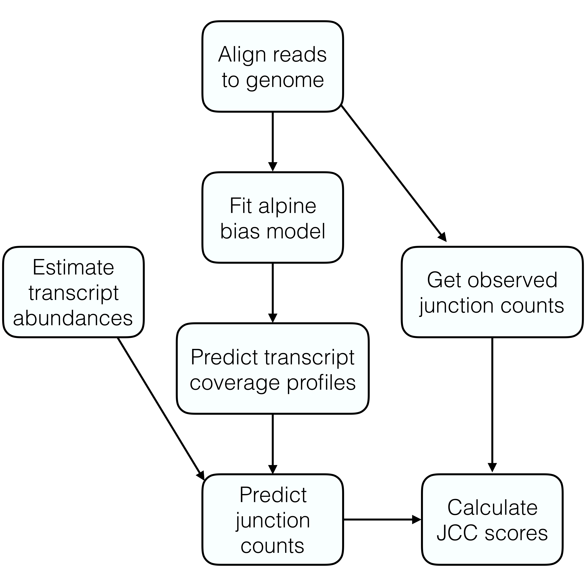
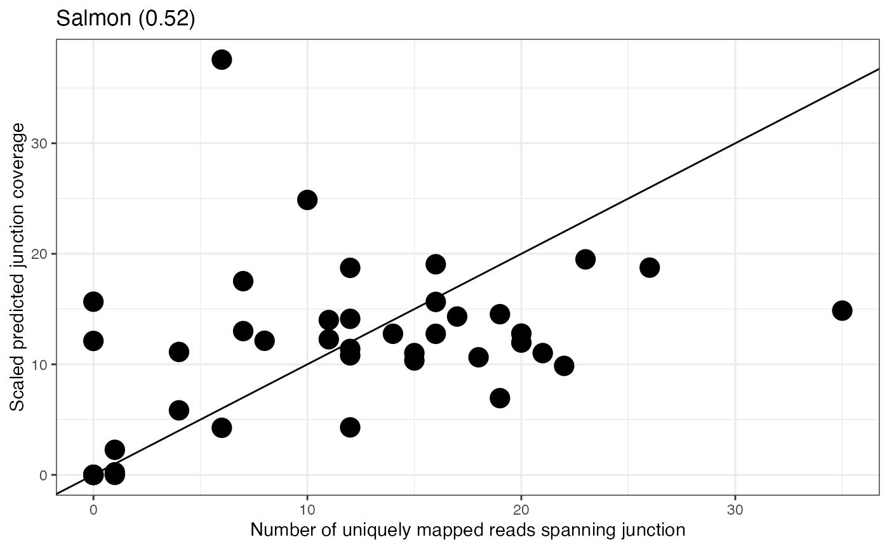
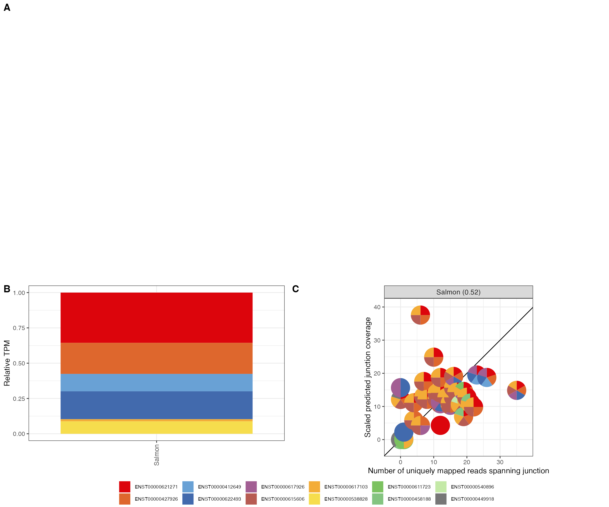

JCCscore.RmdThis vignette describes how to use the jcc package to calculate junction coverage compatibility (JCC_ scores (Soneson et al. 2018) for a given set of genes. In order to run the entire workflow, the following files are required, and will be used as described below:
r Biocpkg("alpine") (Love, Hogenesch, and Irizarry 2016) as well as to obtain the predicted transcript coverage profiles.data.frame with the number of uniquely mapping and multimapping reads aligned across each annotated splice junction. Below we show how to generate a correctly formatted data frame from the SJ.out.tab text file generated by STAR.BSgenome object for the genome that the reads in the BAM file were aligned to.gtf file corresponding to the BSgenome and the BAM file.data.frame with at least two columns, named tx and gene. Additional columns providing, e.g., gene symbols can be included.data.frame with estimated transcript abundances, with three columns named transcript, TPM and count.bedtools genomecov -split -ibam <file.bam> -bg > <file.bedGraph>
bedGraphToBigWig <file.bedGraph> <chrNameLength.txt> <file.bw>where you should replace the text in <> by the appropriate file names. The <chrNameLength.txt> is a text file with the length of each chromosome. If you created a genome index with STAR, the index directory contains such a file. The information can also be extracted from the header of the BAM file.
The workflow has mainly been tested with reference files from Ensembl, and may need to be adjusted to work with reference files in other formats.
The general procedure for estimating junction coverage compatibility (JCC) scores for a set of genes is outlined in the figure below. Please refer to the paper (Soneson et al. 2018) for a more detailed description and motivation of the different steps.

In the rest of this vignette, we will illustrate each step using a small example data set provided with the package.
The first step in the process is to fit a fragment bias model using the alpine package. The fitAlpineBiasModel() function provides a wrapper containing the necessary steps. Note that the parameters of this function may need to be adapted to be appropriate for a specific data set. In particular, since the example data set only contains a small number of reads and genes, we set minCount and minLength to small values to make sure that some genes will be retained and used to fit the fragment bias model. However, in a real data set these arguments can often be set to higher values. Also, the BSgenome object (here, Hsapiens from the BSgenome.Hsapiens.NCBI.GRCh38 package) should be replaced with the appropriate object for your organism. We refer to the help file and the alpine package for more detailed explanations of each parameter.
## Load necessary packages
suppressPackageStartupMessages({
library(jcc)
library(dplyr)
library(BSgenome.Hsapiens.NCBI.GRCh38)
})
## Load gtf file and bam file with aligned reads
gtf <- system.file("extdata/Homo_sapiens.GRCh38.90.chr22.gtf.gz",
package = "jcc")
bam <- system.file("extdata/reads.chr22.bam", package = "jcc")
## Fit fragment bias model
biasMod <- fitAlpineBiasModel(gtf = gtf, bam = bam, organism = "Homo_sapiens",
genome = Hsapiens, genomeVersion = "GRCh38",
version = 90, minLength = 230, maxLength = 7000,
minCount = 10, maxCount = 10000,
subsample = TRUE, nbrSubsample = 30, seed = 1,
minSize = NULL, maxSize = 220,
verbose = TRUE)
#> Creating TxDb object...
#> Importing GTF file ... OK
#> Processing metadata ... OK
#> Processing genes ...
#> Warning in ensDbFromGRanges(GTF, outfile = outfile, path = path, organism
#> = organism, : I'm missing column(s): 'entrezid'. The corresponding database
#> column(s) will be empty!
#> Attribute availability:
#> o gene_id ... OK
#> o gene_name ... OK
#> o entrezid ... Nope
#> o gene_biotype ... OK
#> OK
#> Processing transcripts ...
#> Attribute availability:
#> o transcript_id ... OK
#> o gene_id ... OK
#> o transcript_biotype ... OK
#> OK
#> Processing exons ... OK
#> Processing chromosomes ... Fetch seqlengths from ensembl ... OK
#> Generating index ... OK
#> -------------
#> Verifying validity of the information in the database:
#> Checking transcripts ... OK
#> Checking exons ... OK
#> Import genomic features from the file as a GRanges object ... OK
#> Prepare the 'metadata' data frame ... OK
#> Make the TxDb object ...
#> Warning in .get_cds_IDX(mcols0$type, mcols0$phase): The "phase" metadata column contains non-NA values for features of type
#> stop_codon. This information was ignored.
#> OK
#> Getting list of transcripts...
#> Generating list of exons by transcript...
#> Selecting genes with a single isoform...
#> 149 single-isoform genes found.
#> Filtering out too short and too long transcripts...
#> 125 transcripts remaining.
#> Reading bam file...
#> Subsetting to medium-to-highly expressed genes...
#> 28 genes retained.
#> Subsampling genes for fitting bias model...
#> 28 genes retained.
#> Getting fragment widths and read lengths...
#> Warning in .make_GAlignmentPairs_from_GAlignments(gal, strandMode = strandMode, : 3 alignments with ambiguous pairing were dumped.
#> Use 'getDumpedAlignments()' to retrieve them from the dump environment.
#> Building fragment types...
#> Fitting bias model...
#> Warning in .local(x, row.names, optional, ...): 'optional' argument was ignoredThe output of fitAlpineBiasModel is a list with three objects:
biasModel: the fitted fragment bias model from alpine.exonsByTx: a GRangesList, grouping exons by transcript.transcripts: a GRanges object with all reference transcripts.
names(biasMod)
#> [1] "biasModel" "exonsByTx" "transcripts"
biasMod$exonsByTx
#> GRangesList object of length 510:
#> $ENST00000624155
#> GRanges object with 2 ranges and 3 metadata columns:
#> seqnames ranges strand | exon_id exon_name exon_rank
#> <Rle> <IRanges> <Rle> | <integer> <character> <integer>
#> [1] 22 11066418-11066515 + | 1 ENSE00003758096 1
#> [2] 22 11067985-11068174 + | 2 ENSE00003758861 2
#> -------
#> seqinfo: 1 sequence from an unspecified genome; no seqlengths
#>
#> $ENST00000422332
#> GRanges object with 2 ranges and 3 metadata columns:
#> seqnames ranges strand | exon_id exon_name exon_rank
#> <Rle> <IRanges> <Rle> | <integer> <character> <integer>
#> [1] 22 11124337-11124379 + | 3 ENSE00001616995 1
#> [2] 22 11124508-11125705 + | 4 ENSE00001776473 2
#> -------
#> seqinfo: 1 sequence from an unspecified genome; no seqlengths
#>
#> $ENST00000634617
#> GRanges object with 9 ranges and 3 metadata columns:
#> seqnames ranges strand | exon_id exon_name exon_rank
#> <Rle> <IRanges> <Rle> | <integer> <character> <integer>
#> [1] 22 12602466-12602527 + | 5 ENSE00003784219 1
#> [2] 22 12604670-12604739 + | 6 ENSE00003784834 2
#> [3] 22 12615409-12615534 + | 7 ENSE00003785913 3
#> [4] 22 12616314-12616371 + | 8 ENSE00003790031 4
#> [5] 22 12618171-12618289 + | 9 ENSE00003786552 5
#> [6] 22 12620838-12620938 + | 10 ENSE00003788654 6
#> [7] 22 12624242-12624331 + | 11 ENSE00003791453 7
#> [8] 22 12625317-12625428 + | 12 ENSE00003788301 8
#> [9] 22 12626607-12626642 + | 13 ENSE00003788969 9
#> -------
#> seqinfo: 1 sequence from an unspecified genome; no seqlengths
#>
#> ...
#> <507 more elements>
biasMod$transcripts
#> GRanges object with 510 ranges and 2 metadata columns:
#> seqnames ranges strand | tx_name
#> <Rle> <IRanges> <Rle> | <character>
#> ENST00000624155 22 11066418-11068174 + | ENST00000624155
#> ENST00000422332 22 11124337-11125705 + | ENST00000422332
#> ENST00000634617 22 12602466-12626642 + | ENST00000634617
#> ENST00000613107 22 15273855-15273961 + | ENST00000613107
#> ENST00000448473 22 15290718-15297196 + | ENST00000448473
#> ... ... ... ... . ...
#> ENST00000473551 22 19979997-19990792 - | ENST00000473551
#> ENST00000487793 22 19981152-19987190 - | ENST00000487793
#> ENST00000492625 22 19981382-19987155 - | ENST00000492625
#> ENST00000462319 22 19981545-19983753 - | ENST00000462319
#> ENST00000467828 22 19981991-20016745 - | ENST00000467828
#> gene_id
#> <character>
#> ENST00000624155 ENSG00000279973
#> ENST00000422332 ENSG00000226444
#> ENST00000634617 ENSG00000283023
#> ENST00000613107 ENSG00000276138
#> ENST00000448473 ENSG00000236235
#> ... ...
#> ENST00000473551 ENSG00000099889
#> ENST00000487793 ENSG00000099889
#> ENST00000492625 ENSG00000099889
#> ENST00000462319 ENSG00000099889
#> ENST00000467828 ENSG00000099889
#> -------
#> seqinfo: 1 sequence from an unspecified genome; no seqlengthsNext, we use the fitted fragment bias model to predict the coverage profile for each transcript in a set of specified genes. The genes argument can be set to NULL to predict the coverage profiles for all transcripts in the annotation catalog. Note, however, that this is computationally demanding if the number of transcripts is large. The nCores argument can be increased to predict coverage profiles for several transcripts in parallel.
## Load transcript-to-gene conversion table
tx2gene <- readRDS(system.file("extdata/tx2gene.sub.rds", package = "jcc"))
head(tx2gene)
#> tx gene symbol gene_biotype tx_biotype
#> 4524 ENST00000621271 ENSG00000070371 CLTCL1 protein_coding protein_coding
#> 4525 ENST00000427926 ENSG00000070371 CLTCL1 protein_coding protein_coding
#> 4526 ENST00000412649 ENSG00000070371 CLTCL1 protein_coding retained_intron
#> 4527 ENST00000622493 ENSG00000070371 CLTCL1 protein_coding protein_coding
#> 4528 ENST00000617926 ENSG00000070371 CLTCL1 protein_coding protein_coding
#> 4529 ENST00000615606 ENSG00000070371 CLTCL1 protein_coding retained_intron
## Predict transcript coverage profiles
predCovProfiles <- predictTxCoverage(biasModel = biasMod$biasModel,
exonsByTx = biasMod$exonsByTx,
bam = bam, tx2gene = tx2gene,
genome = Hsapiens,
genes = c("ENSG00000070371",
"ENSG00000093010"),
nCores = 1, verbose = TRUE)
#> Predicting coverage for 23 transcripts...
#> ENST00000361682
#> Warning in .local(x, row.names, optional, ...): 'optional' argument was ignored
#> Predicting junction coverages...
#> ENST00000403184
#> Warning in .local(x, row.names, optional, ...): 'optional' argument was ignored
#> Predicting junction coverages...
#> ENST00000403710
#> Warning in .local(x, row.names, optional, ...): 'optional' argument was ignored
#> Predicting junction coverages...
#> ENST00000407537
#> Warning in .local(x, row.names, optional, ...): 'optional' argument was ignored
#> Predicting junction coverages...
#> ENST00000467943
#> Warning in .local(x, row.names, optional, ...): 'optional' argument was ignored
#> Predicting junction coverages...
#> ENST00000412786
#> Warning in .local(x, row.names, optional, ...): 'optional' argument was ignored
#> Predicting junction coverages...
#> ENST00000207636
#> Warning in .local(x, row.names, optional, ...): 'optional' argument was ignored
#> Predicting junction coverages...
#> ENST00000406520
#> Warning in .local(x, row.names, optional, ...): 'optional' argument was ignored
#> Predicting junction coverages...
#> ENST00000449653
#> Warning in .local(x, row.names, optional, ...): 'optional' argument was ignored
#> Predicting junction coverages...
#> ENST00000493893
#> Warning in .local(x, row.names, optional, ...): 'optional' argument was ignored
#> Predicting junction coverages...
#> ENST00000428707
#> Warning in .local(x, row.names, optional, ...): 'optional' argument was ignored
#> Predicting junction coverages...
#> ENST00000621271
#> Warning in .local(x, row.names, optional, ...): 'optional' argument was ignored
#> Predicting junction coverages...
#> ENST00000427926
#> Warning in .local(x, row.names, optional, ...): 'optional' argument was ignored
#> Predicting junction coverages...
#> ENST00000412649
#> Warning in .local(x, row.names, optional, ...): 'optional' argument was ignored
#> Predicting junction coverages...
#> ENST00000622493
#> Warning in .local(x, row.names, optional, ...): 'optional' argument was ignored
#> Predicting junction coverages...
#> ENST00000617926
#> Warning in .local(x, row.names, optional, ...): 'optional' argument was ignored
#> Predicting junction coverages...
#> ENST00000615606
#> Warning in .local(x, row.names, optional, ...): 'optional' argument was ignored
#> Predicting junction coverages...
#> ENST00000617103
#> Warning in .local(x, row.names, optional, ...): 'optional' argument was ignored
#> Predicting junction coverages...
#> ENST00000538828
#> Warning in .local(x, row.names, optional, ...): 'optional' argument was ignored
#> Predicting junction coverages...
#> ENST00000611723
#> Warning in .local(x, row.names, optional, ...): 'optional' argument was ignored
#> Predicting junction coverages...
#> ENST00000458188
#> Warning in .local(x, row.names, optional, ...): 'optional' argument was ignored
#> Predicting junction coverages...
#> ENST00000540896
#> Warning in .local(x, row.names, optional, ...): 'optional' argument was ignored
#> Predicting junction coverages...
#> ENST00000449918
#> Warning in .local(x, row.names, optional, ...): 'optional' argument was ignored
#> Predicting junction coverages...
length(predCovProfiles)
#> [1] 23The output of predictTxCoverage is a list with one element per reference transcript annotated to any of the selected genes. Each element, in turn, is a list with five components:
predCov: an Rle with the predicted coverage at each position in the transcript.strand: the strand of the transcript.junctionCov: a GRanges object with the location and predicted coverage of each junction in the transcript.aveFragLength: the estimated average fragment length.note: either ‘covOK’, ‘covError’ or ‘covNA’. If ‘covOK’, alpine was able to predict a coverage profile. If ‘covError’ or ‘covNA’, the coverage profile could not be predicted, most likely because the transcript is shorter than the fragment length or because no reads in the BAM file overlapped the transcript. In both these cases, we impose a uniform coverage profile for the transcript.
predCovProfiles[2]
#> $ENST00000403184
#> $ENST00000403184$predCov
#> numeric-Rle of length 2216 with 2216 runs
#> Lengths: 1 1 1 ... 1 1
#> Values : 0.0000000 0.0614766 0.7640371 ... 0.002547412 0.000580614
#>
#> $ENST00000403184$strand
#> [1] "+"
#>
#> $ENST00000403184$junctionCov
#> GRanges object with 4 ranges and 1 metadata column:
#> seqnames ranges strand | pred.cov
#> <Rle> <IRanges> <Rle> | <numeric>
#> [1] 22 19941898-19961198 + | 2.794797
#> [2] 22 19961290-19962526 + | 0.435794
#> [3] 22 19962816-19963565 + | 0.814605
#> [4] 22 19963760-19964167 + | 0.426161
#> -------
#> seqinfo: 1 sequence from an unspecified genome; no seqlengths
#>
#> $ENST00000403184$aveFragLength
#> [1] 187.9594
#>
#> $ENST00000403184$note
#> [1] "covOK"Based on the predicted transcript coverage profiles obtained above, and a set of estimated transcript abundances, we next determine the number of reads predicted to map across each annotated splice junction.
## Read transcript abundance estimates
txQuants <- readRDS(system.file("extdata/quant.sub.rds", package = "jcc"))
## Scale predicted coverages based on the estimated abundances
txsc <- scaleTxCoverages(txCoverageProfiles = predCovProfiles,
txQuants = txQuants, tx2gene = tx2gene,
strandSpecific = TRUE, methodName = "Salmon",
verbose = TRUE)scaleTxCoverages returns a list with two elements:
junctionPredCovs: A data.frame with the predicted coverage for each junction, scaled by the estimated transcript abundances and summarized across all transcripts.txQuants: A data.frame with estimated transcript abundances, including information about whether or not the coverage profile could be predicted (‘covOK’) or if a uniform coverage was imposed (‘covError’ or ‘covNA’).
names(txsc)
#> [1] "junctionPredCovs" "txQuants"
head(txsc$junctionPredCovs)
#> seqnames start end width strand predCov
#> 1 22 19941898 19961198 19301 + 75.58930
#> 2 22 19961290 19962526 1237 + 10.66403
#> 3 22 19962816 19963565 750 + 339.82310
#> 4 22 19963760 19964167 408 + 181.68201
#> 5 22 19964300 19968535 4236 + 159.39402
#> 6 22 19961290 19962232 943 + 50.41439
#> transcript
#> 1 ENST00000361682,ENST00000403184,ENST00000403710,ENST00000407537,ENST00000467943
#> 2 ENST00000361682,ENST00000403184,ENST00000467943,ENST00000412786,ENST00000207636,ENST00000406520
#> 3 ENST00000361682,ENST00000403184,ENST00000403710,ENST00000407537,ENST00000412786,ENST00000207636,ENST00000406520,ENST00000449653
#> 4 ENST00000361682,ENST00000403184,ENST00000403710,ENST00000407537,ENST00000412786,ENST00000406520,ENST00000449653,ENST00000493893,ENST00000428707
#> 5 ENST00000361682,ENST00000403710,ENST00000407537,ENST00000412786,ENST00000207636,ENST00000406520,ENST00000449653
#> 6 ENST00000403710
#> gene method
#> 1 ENSG00000093010 Salmon
#> 2 ENSG00000093010 Salmon
#> 3 ENSG00000093010 Salmon
#> 4 ENSG00000093010 Salmon
#> 5 ENSG00000093010 Salmon
#> 6 ENSG00000093010 Salmon
head(txsc$txQuants)
#> transcript gene count TPM method covNote
#> 1 ENST00000621271 ENSG00000070371 263.734 0.748398 Salmon covOK
#> 2 ENST00000427926 ENSG00000070371 170.231 0.462868 Salmon covOK
#> 3 ENST00000412649 ENSG00000070371 59.429 0.259538 Salmon covOK
#> 4 ENST00000622493 ENSG00000070371 39.974 0.415456 Salmon covOK
#> 5 ENST00000617926 ENSG00000070371 0.000 0.000000 Salmon covOK
#> 6 ENST00000615606 ENSG00000070371 0.000 0.000000 Salmon covOKIn order to calculate JCC scores, we need to match the predicted junction coverages obtained above with the observed coverages obtained by aligning the reads to the genome. Assuming the reads were aligned to the genome with STAR, we have a text file (whose name ends with SJ.out.tab) containing the number of reads spanning each annotated junction. The code below shows how to read this file, add column names and combine these observed junction coverages with the predicted ones obtained above. If the reads were aligned to the genome with another aligner than STAR, the observed junction coverages may need to be determined separately and formatted in the appropriate way.
## Read the SJ.out.tab file from STAR, add column names and encode the strand
## information as +/-
jcov <- read.delim(system.file("extdata/sub.SJ.out.tab", package = "jcc"),
header = FALSE, as.is = TRUE) %>%
setNames(c("seqnames", "start", "end", "strand", "motif", "annot",
"uniqreads", "mmreads", "maxoverhang")) %>%
dplyr::mutate(strand = replace(strand, strand == 1, "+")) %>%
dplyr::mutate(strand = replace(strand, strand == 2, "-")) %>%
dplyr::select(seqnames, start, end, strand, uniqreads, mmreads) %>%
dplyr::mutate(seqnames = as.character(seqnames))
head(jcov)
#> seqnames start end strand uniqreads mmreads
#> 1 22 10848028 10870192 + 0 1
#> 2 22 10941781 10944966 - 3 1
#> 3 22 10947419 10949211 - 4 0
#> 4 22 10949270 10950048 - 1 0
#> 5 22 10950136 10959066 - 3 0
#> 6 22 10950175 10959066 - 2 11
## Combine the observed and predicted junction coverages
combCov <- combineCoverages(junctionCounts = jcov,
junctionPredCovs = txsc$junctionPredCovs,
txQuants = txsc$txQuants)
#> Joining, by = c("seqnames", "start", "end", "gene")The output of combineCoverages is a list with three elements:
junctionCovs: A data.frame with the observed and predicted coverages for each junction, aggregated across all transcripts. The predCov column contains the predicted number of spanning reads, and the uniqreads column will be used to represent the observed number of junction-spanning reads.txQuants: A data.frame with estimated transcript abundances, including information about whether or not the coverage profile could be predicted (‘covOK’) or if a uniform coverage was imposed (‘covError’ or ‘covNA’).geneQuants: A data.frame with estimated gene abundances as well as the total number uniquely mapping and multi-mapping reads spanning any of the junctions in the gene.
names(combCov)
#> [1] "junctionCovs" "txQuants" "geneQuants"
head(combCov$junctionCovs)
#> junctionid seqnames start end width strand predCov
#> 1 J1 22 19941898 19961198 19301 + 75.58930
#> 2 J4 22 19961290 19962526 1237 + 10.66403
#> 3 J8 22 19962816 19963565 750 + 339.82310
#> 4 J10 22 19963760 19964167 408 + 181.68201
#> 5 J12 22 19964300 19968535 4236 + 159.39402
#> 6 J5 22 19961290 19962232 943 + 50.41439
#> transcript
#> 1 ENST00000361682,ENST00000403184,ENST00000403710,ENST00000407537,ENST00000467943
#> 2 ENST00000361682,ENST00000403184,ENST00000467943,ENST00000412786,ENST00000207636,ENST00000406520
#> 3 ENST00000361682,ENST00000403184,ENST00000403710,ENST00000407537,ENST00000412786,ENST00000207636,ENST00000406520,ENST00000449653
#> 4 ENST00000361682,ENST00000403184,ENST00000403710,ENST00000407537,ENST00000412786,ENST00000406520,ENST00000449653,ENST00000493893,ENST00000428707
#> 5 ENST00000361682,ENST00000403710,ENST00000407537,ENST00000412786,ENST00000207636,ENST00000406520,ENST00000449653
#> 6 ENST00000403710
#> gene method uniqreads mmreads fracunique
#> 1 ENSG00000093010 Salmon 70 2 0.9722222
#> 2 ENSG00000093010 Salmon 74 0 1.0000000
#> 3 ENSG00000093010 Salmon 160 0 1.0000000
#> 4 ENSG00000093010 Salmon 365 0 1.0000000
#> 5 ENSG00000093010 Salmon 402 0 1.0000000
#> 6 ENSG00000093010 Salmon 0 0 1.0000000
head(combCov$txQuants)
#> transcript gene count TPM method covNote
#> 1 ENST00000621271 ENSG00000070371 263.734 0.748398 Salmon covOK
#> 2 ENST00000427926 ENSG00000070371 170.231 0.462868 Salmon covOK
#> 3 ENST00000412649 ENSG00000070371 59.429 0.259538 Salmon covOK
#> 4 ENST00000622493 ENSG00000070371 39.974 0.415456 Salmon covOK
#> 5 ENST00000617926 ENSG00000070371 0.000 0.000000 Salmon covOK
#> 6 ENST00000615606 ENSG00000070371 0.000 0.000000 Salmon covOK
head(combCov$geneQuants)
#> gene method count TPM nbr_expressed_transcripts
#> 1 ENSG00000070371 Salmon 547.001 2.103382 1
#> 2 ENSG00000093010 Salmon 1697.000 45.966095 1
#> nbr_expressed_transcripts_5p covOKfraction uniqjuncreads mmjuncreads
#> 1 5 1 469 0
#> 2 3 1 1073 4
#> uniqjuncfraction
#> 1 1.000000
#> 2 0.996286Finally, we calculate scaled predicted junction coverages and summarize the differences between the observed and predicted junction coverages for each gene by the JCC (junction coverage compatibility) scores.
## Calculate a JCC score for each gene
jcc <- calculateJCCScores(junctionCovs = combCov$junctionCovs,
geneQuants = combCov$geneQuants)
head(jcc$junctionCovs)
#> junctionid seqnames start end width strand predCov
#> 1 J1 22 19941898 19961198 19301 + 75.58930
#> 2 J4 22 19961290 19962526 1237 + 10.66403
#> 3 J8 22 19962816 19963565 750 + 339.82310
#> 4 J10 22 19963760 19964167 408 + 181.68201
#> 5 J12 22 19964300 19968535 4236 + 159.39402
#> 6 J5 22 19961290 19962232 943 + 50.41439
#> transcript
#> 1 ENST00000361682,ENST00000403184,ENST00000403710,ENST00000407537,ENST00000467943
#> 2 ENST00000361682,ENST00000403184,ENST00000467943,ENST00000412786,ENST00000207636,ENST00000406520
#> 3 ENST00000361682,ENST00000403184,ENST00000403710,ENST00000407537,ENST00000412786,ENST00000207636,ENST00000406520,ENST00000449653
#> 4 ENST00000361682,ENST00000403184,ENST00000403710,ENST00000407537,ENST00000412786,ENST00000406520,ENST00000449653,ENST00000493893,ENST00000428707
#> 5 ENST00000361682,ENST00000403710,ENST00000407537,ENST00000412786,ENST00000207636,ENST00000406520,ENST00000449653
#> 6 ENST00000403710
#> gene method uniqreads mmreads fracunique jccscore scaledCov
#> 1 ENSG00000093010 Salmon 70 2 0.9722222 0.73 96.15727
#> 2 ENSG00000093010 Salmon 74 0 1.0000000 0.73 13.56573
#> 3 ENSG00000093010 Salmon 160 0 1.0000000 0.73 432.28947
#> 4 ENSG00000093010 Salmon 365 0 1.0000000 0.73 231.11796
#> 5 ENSG00000093010 Salmon 402 0 1.0000000 0.73 202.76537
#> 6 ENSG00000093010 Salmon 0 0 1.0000000 0.73 64.13222
#> methodscore
#> 1 Salmon (0.73)
#> 2 Salmon (0.73)
#> 3 Salmon (0.73)
#> 4 Salmon (0.73)
#> 5 Salmon (0.73)
#> 6 Salmon (0.73)
head(jcc$geneScores)
#> gene method count TPM nbr_expressed_transcripts
#> 1 ENSG00000070371 Salmon 547.001 2.103382 1
#> 2 ENSG00000093010 Salmon 1697.000 45.966095 1
#> nbr_expressed_transcripts_5p covOKfraction uniqjuncreads mmjuncreads
#> 1 5 1 469 0
#> 2 3 1 1073 4
#> uniqjuncfraction jccscore
#> 1 1.000000 0.52
#> 2 0.996286 0.73calculateJCCScores returns a list with two elements:
junctionCovs: A data.frame with observed and predicted junction coverages, as well as scaled predicted coverages (scaledCov column) and JCC scores for the corresponding gene (jccscore).geneScores: A data.frame with gene-level abundances, extended with the calculated JCC scores (jccscore column).To investigate the agreement between the observed and predicted junction coverages for a given gene, we can plot the uniqreads and scaledCov columns from the junction coverage data frame generated in the previous step:
selGene <- "ENSG00000070371"
ggplot2::ggplot(as.data.frame(jcc$junctionCovs) %>%
dplyr::filter(gene == selGene),
ggplot2::aes(x = uniqreads, y = scaledCov)) +
ggplot2::geom_abline(intercept = 0, slope = 1) +
ggplot2::geom_point(size = 5) +
ggplot2::theme_bw() +
ggplot2::xlab("Number of uniquely mapped reads spanning junction") +
ggplot2::ylab("Scaled predicted junction coverage") +
ggplot2::ggtitle(unique(jcc$junctionCovs %>%
dplyr::filter(gene == selGene) %>%
dplyr::pull(methodscore)))
The package also contains a function to generate a multi-panel plot, showing (i) the observed genome coverage profile in the region of the gene, (ii) the estimated transcript abundances, and (iii) the association between the observed and predicted junction coverages.
bwFile <- system.file("extdata/reads.chr22.bw", package = "jcc")
plotGeneSummary(gtf = gtf, junctionCovs = jcc$junctionCovs,
useGene = "ENSG00000070371", bwFile = bwFile,
txQuants = combCov$txQuants, txCol = "transcript_id",
geneCol = "gene_id", exonCol = "exon_id")
#> Warning: Package `magick` is required to draw images. Image not drawn.
sessionInfo()
#> R Under development (unstable) (2021-10-29 r81110)
#> Platform: x86_64-apple-darwin17.0 (64-bit)
#> Running under: macOS Catalina 10.15.7
#>
#> Matrix products: default
#> BLAS: /Library/Frameworks/R.framework/Versions/4.2/Resources/lib/libRblas.0.dylib
#> LAPACK: /Library/Frameworks/R.framework/Versions/4.2/Resources/lib/libRlapack.dylib
#>
#> locale:
#> [1] en_US.UTF-8/en_US.UTF-8/en_US.UTF-8/C/en_US.UTF-8/en_US.UTF-8
#>
#> attached base packages:
#> [1] stats4 stats graphics grDevices utils datasets methods
#> [8] base
#>
#> other attached packages:
#> [1] BSgenome.Hsapiens.NCBI.GRCh38_1.3.1000
#> [2] BSgenome_1.63.1
#> [3] rtracklayer_1.55.0
#> [4] Biostrings_2.63.0
#> [5] XVector_0.35.0
#> [6] GenomicRanges_1.46.0
#> [7] GenomeInfoDb_1.31.1
#> [8] IRanges_2.29.0
#> [9] S4Vectors_0.33.0
#> [10] BiocGenerics_0.41.1
#> [11] dplyr_1.0.7
#> [12] jcc_0.1.0
#> [13] BiocStyle_2.23.0
#>
#> loaded via a namespace (and not attached):
#> [1] backports_1.3.0 Hmisc_4.6-0
#> [3] BiocFileCache_2.3.0 systemfonts_1.0.3
#> [5] lazyeval_0.2.2 splines_4.2.0
#> [7] BiocParallel_1.29.0 ggplot2_3.3.5
#> [9] digest_0.6.28 ensembldb_2.19.0
#> [11] htmltools_0.5.2 fansi_0.5.0
#> [13] magrittr_2.0.1 checkmate_2.0.0
#> [15] memoise_2.0.0 cluster_2.1.2
#> [17] matrixStats_0.61.0 pkgdown_1.9000.9000.9000
#> [19] prettyunits_1.1.1 jpeg_0.1-9
#> [21] colorspace_2.0-2 blob_1.2.2
#> [23] rappdirs_0.3.3 textshaping_0.3.6
#> [25] xfun_0.27 crayon_1.4.2
#> [27] RCurl_1.98-1.5 jsonlite_1.7.2
#> [29] graph_1.73.0 scatterpie_0.1.7
#> [31] survival_3.2-13 VariantAnnotation_1.41.0
#> [33] glue_1.4.2 polyclip_1.10-0
#> [35] gtable_0.3.0 zlibbioc_1.41.0
#> [37] alpine_1.21.0 DelayedArray_0.21.0
#> [39] scales_1.1.1 DBI_1.1.1
#> [41] Rcpp_1.0.7 progress_1.2.2
#> [43] htmlTable_2.3.0 foreign_0.8-81
#> [45] bit_4.0.4 Formula_1.2-4
#> [47] htmlwidgets_1.5.4 httr_1.4.2
#> [49] RColorBrewer_1.1-2 speedglm_0.3-3
#> [51] ellipsis_0.3.2 pkgconfig_2.0.3
#> [53] XML_3.99-0.8 farver_2.1.0
#> [55] Gviz_1.39.0 nnet_7.3-16
#> [57] sass_0.4.0 dbplyr_2.1.1
#> [59] utf8_1.2.2 labeling_0.4.2
#> [61] tidyselect_1.1.1 rlang_0.99.0.9000
#> [63] AnnotationDbi_1.57.0 munsell_0.5.0
#> [65] tools_4.2.0 cachem_1.0.6
#> [67] cli_3.1.0 generics_0.1.1
#> [69] RSQLite_2.2.8 evaluate_0.14
#> [71] stringr_1.4.0 fastmap_1.1.0
#> [73] yaml_2.2.1 ragg_1.1.3
#> [75] knitr_1.36 bit64_4.0.5
#> [77] fs_1.5.0 purrr_0.3.4
#> [79] KEGGREST_1.35.0 AnnotationFilter_1.19.0
#> [81] RBGL_1.71.0 xml2_1.3.2
#> [83] biomaRt_2.51.0 compiler_4.2.0
#> [85] rstudioapi_0.13 filelock_1.0.2
#> [87] curl_4.3.2 png_0.1-7
#> [89] tibble_3.1.5 tweenr_1.0.2
#> [91] bslib_0.3.1 stringi_1.7.5
#> [93] highr_0.9 GenomicFeatures_1.47.1
#> [95] desc_1.4.0 lattice_0.20-45
#> [97] ProtGenerics_1.27.0 Matrix_1.3-4
#> [99] vctrs_0.3.8 pillar_1.6.4
#> [101] lifecycle_1.0.1 BiocManager_1.30.16
#> [103] jquerylib_0.1.4 data.table_1.14.2
#> [105] cowplot_1.1.1 bitops_1.0-7
#> [107] R6_2.5.1 BiocIO_1.5.0
#> [109] latticeExtra_0.6-29 bookdown_0.24
#> [111] gridExtra_2.3 dichromat_2.0-0
#> [113] MASS_7.3-54 assertthat_0.2.1
#> [115] SummarizedExperiment_1.25.0 rprojroot_2.0.2
#> [117] rjson_0.2.20 GenomicAlignments_1.31.0
#> [119] Rsamtools_2.11.0 GenomeInfoDbData_1.2.7
#> [121] parallel_4.2.0 hms_1.1.1
#> [123] grid_4.2.0 rpart_4.1-15
#> [125] ggfun_0.0.4 tidyr_1.1.4
#> [127] rmarkdown_2.11 MatrixGenerics_1.7.0
#> [129] biovizBase_1.43.0 ggforce_0.3.3
#> [131] Biobase_2.55.0 base64enc_0.1-3
#> [133] restfulr_0.0.13Dobin, Alexander, Carrie A Davis, Felix Schlesinger, Jorg Drenkow, Chris Zaleski, Sonali Jha, Philippe Batut, Mark Chaisson, and Thomas R Gingeras. 2013. “STAR: Ultrafast Universal RNA-seq Aligner.” Bioinformatics 29 (1): 15–21.
Love, Michael I, John B Hogenesch, and Rafael A Irizarry. 2016. “Modeling of RNA-seq Fragment Sequence Bias Reduces Systematic Errors in Transcript Abundance Estimation.” Nat. Biotechnol. 34 (12): 1287–91.
Soneson, Charlotte, Michael I Love, Rob Patro, Shobbir Hussain, Dheeraj Malhotra, and Mark D Robinson. 2018. “A Junction Coverage Compatibility Score to Quantify the Reliability of Transcript Abundance Estimates and Annotation Catalogs.” bioRxiv 10.1101/378539.